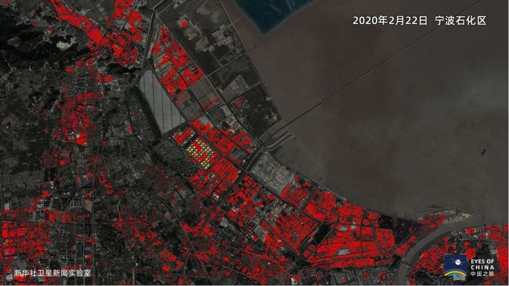
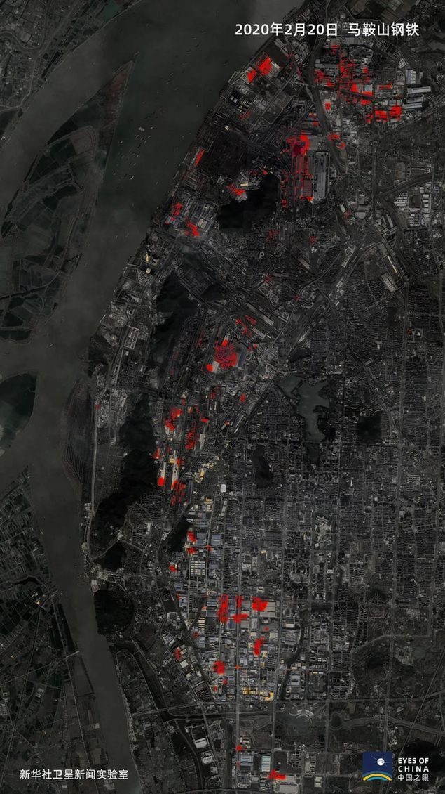
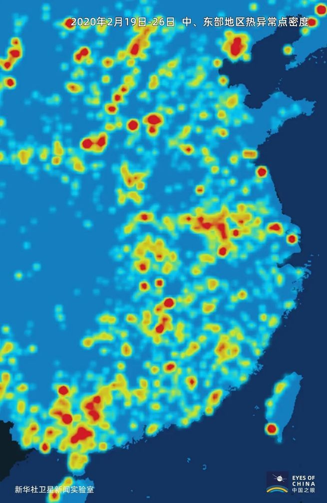
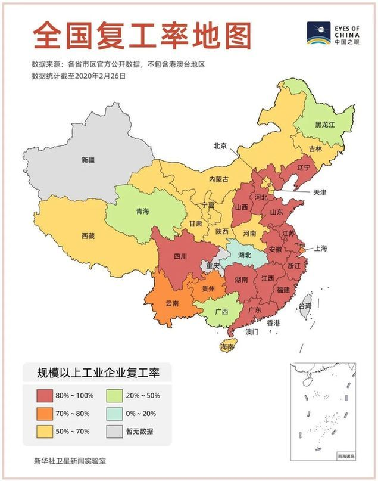
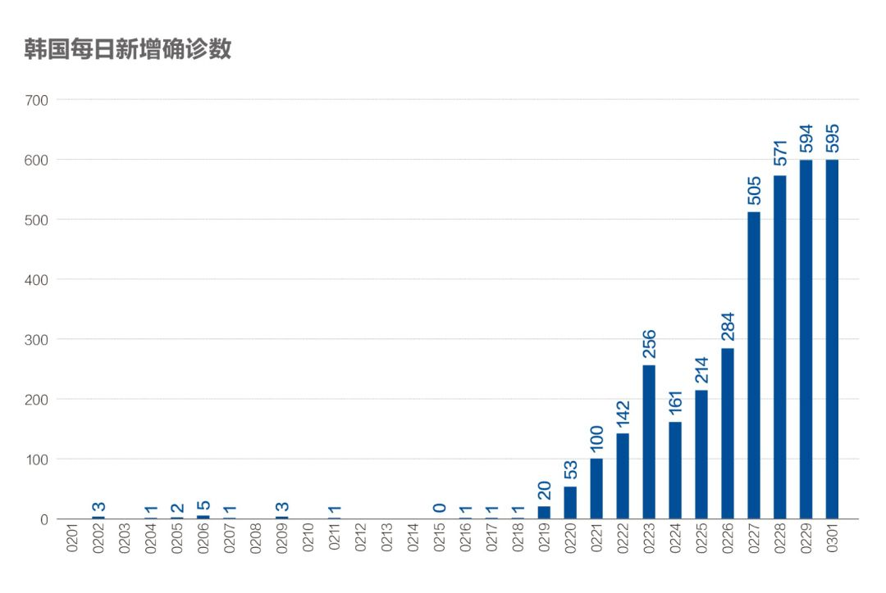

数说疫情0229：武汉拉锯阶段有望结束，海外警报升级
原文链接 备份链接 2月19日以来，武汉新增病例在300-500区间出现一个持续10天之久的“拉锯期”，不难想像战况之惨烈。但指标显示这种胶着局面将很快结束，进入一马平川阶段 文 |《财经》数据研究员 徐进 图 |《财经》 …

国内疫情即将进入扫尾期。今天，我们通过病、死、生三项数据，来为国内疫情做一个复盘
文 |《财经》数据研究员徐进 图 |《财经》视觉中心
编辑 | 谢丽容 郝洲
一、 累计确诊病例：全国总病例数有望控制在81000例左右
截至2月29日24:00，31个省（自治区、直辖市）和新疆生产建设兵团累计报告确诊新冠肺炎病例79824例，新增病例573例。今天我们虽然略微调高了全国累计病例总数预期，但信心其实更加明确坚定。今天累计治愈人数首次超过累计病例的50%，意味着从今天起，累计治愈人数超过尚在医院治疗及不幸病死人数的总合。随着每日新增病例即将全面趋零，疫情防控将逐步转向扫尾阶段。
二、 新增病例、新增病死和新增治愈
我们就看三个图，讨论一下病、死、生的关系。
图1

蓝色实线是每日新增确诊病例，这是分析传染病最基本的图，也叫传染病流行曲线。曲线的顶端（峰值）构成了一个分水岭：左侧的基本传染数（R0）大于1（这次新冠肺炎专家给出的R0在2-5之间，十分凶猛）；右边的传染数在人为的积极干预下变成小于1。左边的情况犹如脱缰野马，若不能及时有效阻隔，后果不堪设想；右边则是马已被套住，虽然还会跑一段儿，但迟早会停下。
我们看见，国内非湖北地区由于疫情起步较晚，社会对疫情警觉相对较早，政府实施动员防控手段坚决有效、资源充沛，使得其峰值能较早于2月3日出现，此后一路下降，基本没有大的反复。接下来出现的是黑线（新增病死）代表的死亡之舟，它紧贴地面，峰值（众值）出现在2月12日，滞后9天。第三个出场的是黄线（新增治愈）代表的生命之舟。它的桅杆（峰值）出现在2月20日，比蓝线峰值滞后17天，不难想见它将与蓝线类似，基本呈正态为主的正偏态分布，只是比蓝线略扁一些（我们推测相对越扁意味着治疗难度越大）。
图2

湖北非武汉地区蓝线表明：其疫情虽起步略早，但峰值并未提前，同样出现在2月3日，之后还出现过（2月11日）较大反复。这些与其发病密度较高，隔离救治资源紧缺有关。孝感、黄冈还一度由于此前追踪、隔离、排查、收治力度远远没有跟上疫情发展，造成了大量待隔离排查救治病例的积压，也就是所谓中型“堰塞湖”。幸有湖北省委坚强领导，坚决落实中央和中央指导组的指示使各种堰塞湖得以及时化解。疫情经历较长预备期，使得黑线的峰值出现在2月10日，只比蓝线峰值滞后5天。峰值出现后仍保持较高水平。跟此前收治不及时，轻症转重症，以及救治资源、救治条件相对不足有关。生命之舟峰值大约出现在2月22日，滞后19日，其后出现了一个平台，应与堰塞湖有关。
图3

武汉疫情出现最早，问题暴露拖延，导致疫情最为严重！蓝线本该出现的峰值一直推迟到2月13日，比国内其他地区晚了10天，甚至比黑线峰值还晚了一天！峰值出现后又在1700例左右震荡了4、5日，消化了较大的堰塞湖，继而又下探到400例左右，持续震荡10余日，再次消化较小的堰塞湖，至今仍未结束。如此层层拉锯，层层阻击、反阻击，足见教训之深、疫情之重，也足见中央领导所说的武汉保卫战、阻击战之艰苦卓绝、艰难惨烈。庆幸的是，我们终于还是看见了生命之舟的桅杆。
关于武汉2月29日新增病例565例，我们初步分析如下：从2月19日开始的这一轮反常平台拉锯期，更符合消化存量（解决各种遗留问题）为主的数据特征。特别是28日武汉新增疑似已降到114例，存量788例；29日更进一步降至50例，存量393例，已很难解释当日新增病例数量。
还有一个值得注意的变动，就是我们推算出的“湖北确诊未住院人数”在连续多日持续明显下降的情况下，于2月28日突然出现极为异常的增长，而且竟多达396例。在湖北和武汉已经按中央要求完全做到“尽收尽治”，目前已出现“床等人”的情况下，这396个病例只能是已痊愈的确诊病例，更准确地说，是已痊愈病例的确诊。属于“拉网筛查”、存量消化。因此我们有充分的理由相信，存量虽待消化，当期新增量开始变小，局面已在掌控中。不出几日，武汉就将迎来一片光明。
至于图中的绿色虚线是什么意思？它的定义是：在黄、黑线进行平移将各自峰值（众值）与蓝线峰值对齐情况下，绿虚线的对应数值=黑线的对应数值+黄线的对应数值。在疫情最终结束时，蓝线圈定的总面积=绿虚线圈定的总面积，也即是说，累计确诊病例=累计病死者+累计治愈者。随着每日新增病例趋零，累计病例基本停止增加。剩下的就是和死神赛跑，让生命之舟接走尽量多的人。我们可以借助这个图推测最终病死率和最终治愈率，例如我们可以预计病死率最近很可能又会经历一个先降后升的过程（有兴趣的读者可以试试）。但强力提升救治能力，提高治愈率、降低病死率的根本，还得依靠那些不惜奉献生命、呕心沥血的医护天使！依靠科学家！依靠政府调集资源！依靠我们的国家和人民！
三、 卫星发现了一个重要信号，中国正在“热”起来
这是转自新华社的消息，小编直接用了新华社的题目。因为这个题目让身在武汉宅家码字的小编热泪难掩。
图4

图5

图6

图7

图8

（以上图片均来自新华社）。
不用赘述了，一目了然了吧。按照中央“统筹好疫情防控和经济社会发展”的要求，精准有效的复工复产已经全面启动。春天回来了，小编自知暂时还难返京，但是很想先去看看东湖的樱花。花期还要两周后开始，相信一定不会错过今年的花季。
在中央有力领导、全国人民全体动员的情况下，国内疫情已经得到有效控制，从“数说”角度看已不太可能有大的变数，变数全在国外。今天起，我们将配置力量增加对国外疫情的关注。
四、 海外新增病例加速增长，发现确诊病例国家范围继续扩大，世卫组织将全球疫情风险等级调至“最高”
图9

全球累计确诊病例数突破7000例，其中韩国确诊病例数突破3000例。
图10

新增病例集中在韩国、意大利、伊朗三国，欧盟的德国、法国、西班牙持续出现新增病例，并呈现加速趋势。全球死亡数超过100例，美国本土出现首例死亡。
图11

有必要重点说说韩国的新增情况。韩国新增数字较快的原因是“新天地”教会成员（总数约为21.5万）仍在陆续接受病毒检测。新增病例主要集中在大邱市，占韩国新增总数的86.4%。大邱市的感染密度很高，这非常挑战韩国地方政府的应变能力。目前已有61037例病毒检测呈阴性，有32422例疑似病例正在等待检测结果，且阳性比率预计会比较高，接下来几天，韩国确诊病例预计仍将继续呈现较高的增长态势。
【特别说明：2月29日前为世卫组织官方统计数据，数据截止时间为北京时间每日17时；从2月29日开始，数据由《财经》根据公开资料统计，截止时间为北京时间每日9时】
小结：武汉拉锯近一两日即可结束。国内疫情将很快转入扫尾阶段。按中央精神在抓好疫情防控决不放松前提下，有序复工复产将成为新的热点。与此同时，海外疫情开始变得越来越受关注。


▲点击图片查看更多疫情报道
责编 | 黄端 duanhuang@caijing.com.cn
本文为《财经》杂志原创文章，未经授权不得转载或建立镜像。如需转载，请在文末留言申请并获取授权。
原文链接 备份链接 2月19日以来，武汉新增病例在300-500区间出现一个持续10天之久的“拉锯期”，不难想像战况之惨烈。但指标显示这种胶着局面将很快结束，进入一马平川阶段 文 |《财经》数据研究员 徐进 图 |《财经》 …
原文链接 备份链接 国内非湖北地区25日新增病例24例，其中北京10例，从这些地方接受医学观察者数量、新增疑似病例以及待排查疑似病例等上游数据均持续稳步下降的态势看，此数据大幅反弹应属异常 文 |《财经》数据研究员徐进 图 |《财经》视觉 …
原文链接 备份链接 全国多数省区已实现“零新增”，统计上未见疫情卷土重来证据，也未发现意味着疫情死灰复燃的个案 文/《财经》数据研究员徐进 图/《财经》视觉中心 编辑/谢丽容 今天是农历二月二“龙抬头”。按北方农村传统，今起春耕大忙开 …
原文链接 备份链接 全国21省份22日零新增，抗疫战果继续巩固。此前我们预测湖北疑似病例存量，在拉网排查取得成功后会于22日开始下降，最新数据确实印证了该预测 文 |《财经》数据研究员 徐进 图 |《财经》视觉中心 编辑 | 谢丽容 …
原文链接 备份链接 为什么我们说武汉战局出现了反守为攻的转机？主要有3点 文 |《财经》数据研究员 徐进 图 |《财经》视觉中心 编辑 | 谢丽容 一、 累计确诊病例：趋势现“顶” 截至2月21日24:00，全国累计报告确诊新冠肺炎病 …